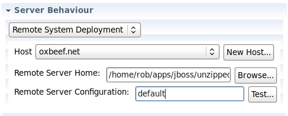

< Main Index Hibernate Tools >
Remote System Support Improvements |
|
|
Remote Server Status |
Startup of a remote server will now first check if it's already started. Previous behaviour was to always try to start a new server, but if the user had externally started the remote server, this could cause errors. The tooling will now attempt to verify the state of the remote server before launching a new one. |
|
Remote Server Uncancelable Jobs |
Work was put into properly canceling startup and shutdown jobs to prevent uncancelable jobs blocking the workspace and decreasing usability. Previous behavior for launching remote servers often left the workbench in an unusable state, where the server state was not marked as 'started' and several uncancelable jobs remained in the progress view, potentially blocking other tasks and becoming confusing for the user. Related Jiras: 1 |
|
Remote Servers now manage DeploymentScanner |
The remote deployment scanner will now be stopped before publishes, and resumed after. This will prevent partial deployments being picked up by the server. Related Jiras: 1 |
|
MBean Server Connection for remote servers spun off into a job |
Remote JMX commands occasionally stall if the remote server's JMX is not exposed. This previously would prevent the server's state to switch to starting, or at least delay it significantly. It has now been spun off into its own job to ensure it is cancelable and does not block other workspace activity, specifically the completion of marking the server state to started. Related Jiras: 1 |
|
RSE UI added to new server wizard |
The RSE composites have been added to the new server wizard and editor, to allow earlier configuration by the user. Methods to add additional hosts, or browse for folders, have also been added for convenience.  |
Deployable Changes |
|
|
Single Folder Deployment |
While previously you could only mark single files as deployable, now you can do the same with folders! Woohoo! They can also be marked as zipped, but at this point, renaming the output archive is not yet possible. |
|
|
|